בחרו את המקומות שלכם
הקישו על „קראו עוד” להרחבה. אין חבילות קבועות, אין דירוגים ואין לחץ.

הקניון הצבעוני
הקניון הצבעוני נמצא בחצי האי סיני ליד נואיבה. זהו ערוץ צר של אבן חול שעוצב בידי סחיפת מים קדומה, וידוע בשכבות מרבצי המינרלים שלו בגוונים רבים.
הקירות המפוספסים של הקניון נוצרו במשך מיליוני שנים, ומציגים פסים של ברזל, מנגן ואבן חול בגוונים עמומים של אדום, סגול ואוקר. המעברים המתפתלים מצטרים ומתרחבים באופן בלתי צפוי, כך שרגעים של צפיפות ושל מרחב מתחלפים ומחדדים את התחושה של קנה מידה ושל זמן גיאולוגי בנוף צחיח.
הליכה מודרכת בקניון נמשכת בדרך כלל שעתיים, על שטח לא אחיד עם טיפוס קל פה ושם.

ואדי וושוושי
ואדי וושוושי הוא קניון מדבר צר בחצי האי סיני ליד נואיבה, הידוע בבריכות המים המתוקים הנסתרות שלו בין תצורות אבן חול מפוסלות.
הוואדי נחצב במשך אלפי שנים בידי שיטפונות עונתיים שפרצו דרך סלע משקע, ומסתיים בשורה של אגנים טבעיים שמתמלאים ממי גשמים ומחלחול תת-קרקעי. מגיעים אליו בהליכה הדרגתית במדבר הפתוח, והמעבר מהמישור החשוף לקניון הסגור משנה בבירור את קנה המידה ואת הקול: שקט והד מחליפים את הדממה העצומה של הנוף מסביב.
הגישה דורשת הליכה מודרכת של 45–60 דקות במדבר מהדרך הקרובה. אפשר להגיע ברכב 4x4 או בגמל.

הקניונים הנסתרים
קניון צר של אבן חול ליד טאבה במזרח מצרים, הידוע כקניון הנסתר, ובקירותיו כתובות שהשתמרו מהתקופה העות'מאנית.
הקניון נמצא בהרים שממערב לטאבה בחצי האי סיני, ובנוי מאבן חול שכבתית שעוצבה בידי רוח ומים עונתיים. בין הפסים הטבעיים יש כתובות בערבית מהתקופה העות'מאנית, שכנראה מציינות נוכחות מנהלית או מטיילים שעברו. המעבר הצר, האור המסונן והכתב הבלוי יוצרים מפגש שקט עם זמן גיאולוגי והיסטורי.
כ-30–45 דקות הליכה; הכי כדאי בבוקר המוקדם, כשקריר יותר והאור רך יותר.
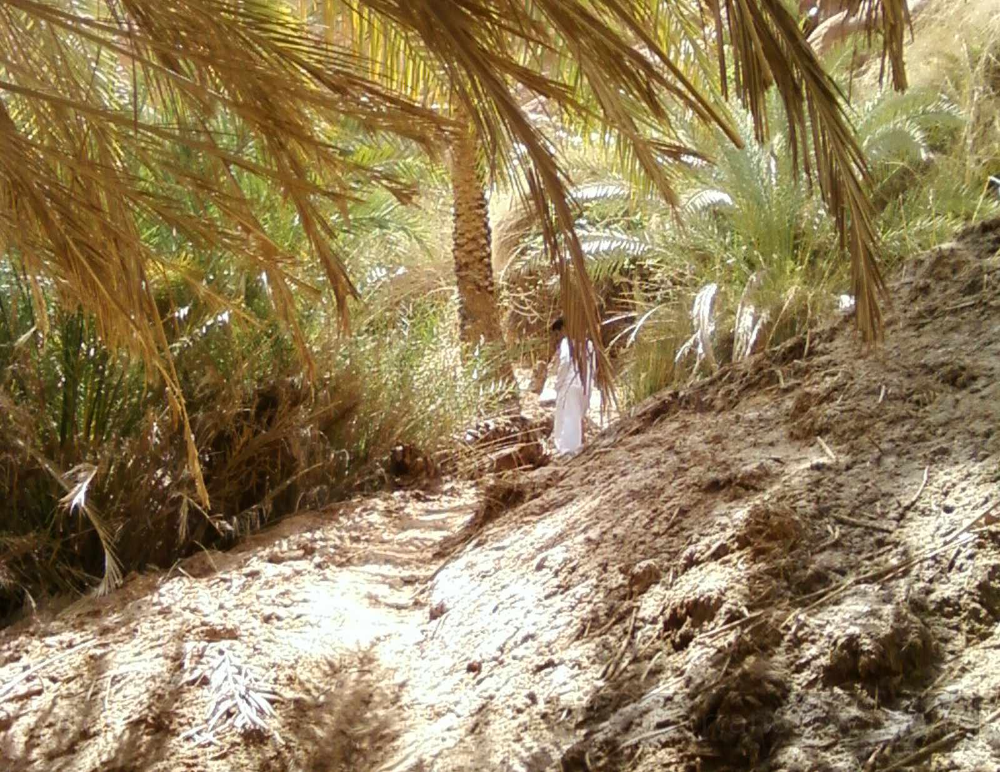
ואדי מלחה
ואדי מלחה הוא עמק מדבר מצופה מלח בדרום סיני, ממזרח להרי סיני, שמאופיין במרבצי מינרלים, תצורות סלע וערוצי מים עונתיים.
שם הוואדי, „עמק המלח”, מתאר את קרומי המינרלים הבהירים שנוצרו מאידוי בנוף הצחיח הזה, שעוצב בידי הרמה טקטונית וסחיפה. האגן הרחב והפתוח והגוונים העמומים יוצרים תחושת מרחב חזקה, שבה השקט והחשיפה מחדדים את המודעות לזמן הגיאולוגי ולקטנותו של האדם.
אפשר להגיע ברכב 4x4 או בגמל, עם הליכות חקירה קצרות על שטח לא אחיד.

באר אל-בריעה
באר אל-בריעה היא באר מדבר מרוחקת ואתר חניה בחצי האי סיני, בנוף של רמות אבן חול ומישורי חצץ שעוצבו בידי הרוח והזמן.
באר אל-בריעה נמצאת במרכז סיני, ושימשה בעבר מקור מים צנוע לקהילות בדואיות ולמטיילים בדרכים הפנימיות של חצי האי. השטח מסביב, צחיח, רחב ודליל אוכלוסייה, יוצר תחושה חדה של מרחק ושקט, שבה הזמן הגיאולוגי מורגש יותר מתנועת בני אדם.
הכי כדאי לבקר בין אוקטובר לאפריל, כשהטמפרטורות ביום מתונות והגישה נוחה יותר.

קניון הקשת
קניון הקשת הוא ערוץ אבן חול בחצי האי סיני, שבולט בתצורות הסלע המפוספסות הטבעיות שלו, שנוצרו מהרמה טקטונית וסחיפה ממושכת.
הקניון נמצא בפנים הצחיח של דרום סיני, וקירותיו השכבתיים מציגים כתמי מינרלים בגוני אדום, אוקר וסגול עמומים, עדות לתהליכים גיאולוגיים שנמשכו מיליוני שנים. המעברים הצרים והאור המסונן יוצרים אווירה מעומעמת שבה הקול נישא ברכות, ומעוררים מודעות לקנה מידה ולזמן שטבוע באבן.
מסלול הליכה רגיל: כשעה-שעתיים על שטח סלעי ולא אחיד.

ביר א-צורה
ביר א-צורה היא באר מדבר מרוחקת בוואדי וטיר בדרום סיני, ששימשה בעבר מקור מים לאורך דרכי הבדואים הפנימיות.
ביר א-צורה נמצאת במישורי החצץ הרחבים של ואדי וטיר, והיא חלק מרשת בארות שתמכה פעם בתנועת רועים וביישובים קטנים בנוף צחיח. נוכחותה היא הפסקה שקטה בשטח המינרלי העצום, שבו השקט והפתיחות מזמינים מחשבה על סבולת, מחסור והקצב המדוד של חיי המדבר.
אפשר להגיע ברכב 4x4; כ-60 ק"מ צפון-מערבית לנואיבה בדרום סיני.
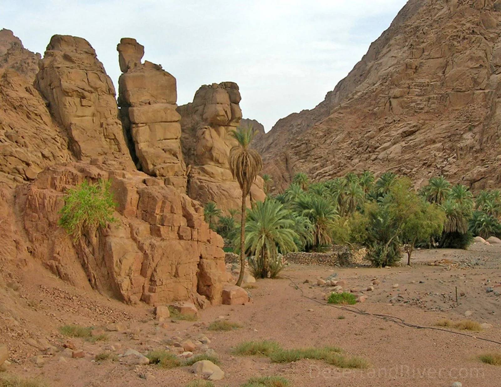
עין פורטגה
עין פורטגה היא מעיין טבעי בדרום חצי האי סיני, מקור נדיר של מים מתוקים בנוף המדבר הצחיח של אזור ההרים במצרים.
המעיין נובע מצוקי אבן חול מחוספסים, ולאורך ההיסטוריה פרנס קהילות בדואיות וחיות בר. הזרימה השקטה שלו מנוגדת בחדות לקשיחות המדבר מסביב, ומציעה רגע של שלווה וחיבור לקצב המתמשך של הנוף הזה.
אפשר להגיע בהליכה של 30 דקות מדרך המדבר הקרובה, להליכות חקירה קצרות

עין אום אחמד
עין אום אחמד היא מעיין טבעי בדרום חצי האי סיני, מקור נדיר של מים מתוקים בנוף המדבר הצחיח של האזור.
המעיין פרנס לאורך ההיסטוריה קהילות בדואיות נוודות וחיות בר מקומיות, ויוצר מובלעת קטנה ופורייה בשטח מחוספס. מימיו השקטים משקפים את המרחב הדומם סביבו, ומעוררים תחושה של בדידות נצחית והמשכיות עדינה בסביבת המדבר.
אפשר להגיע ברכב 4x4 מדרך המדבר הקרובה.

ואדי ע'זאלה
ואדי ע'זאלה הוא עמק מדבר בחצי האי סיני, הידוע בשטח הסלעי ובערוצי המים העונתיים שלו, ולפי המסורת נקרא על שם המקום שבו אדם מקומי מצא צבייה מתה והציל את העופר שלה.
השם „ע'זאלה” משמר את הסיפור הזה, ופירושו „מקום הצבייה”, קשר אנושי שקט לנוף. תצורות הסלע המחוספסות והחולות הבתוליים מעוררים תחושת שקט ונצחיות, שבה אפשר להרגיש את העיצוב האיטי של הטבע והזיכרון לאורך הדורות.
את הוואדי חוצים בדרך כלל ברכב ולא ברגל, בנסיעה יפה בין מעברי המדבר הצרים.

ואדי רום
ואדי רום הוא עמק מרוחק בדרום סיני שמשתרע בשטח מדבר מחוספס, עם צוקי סלע, ערוצי מים עונתיים וצמחייה דלילה.
הוואדי הוא חלק מרשת עמקים שעוצבו בסחיפה לאורך אלפי שנים, וחושף תצורות סלע שכבתיות ועקבות ארכיאולוגיים של מגורי בדואים פה ושם. המרחב הפתוח מעורר שקט עמוק, שבו קנה המידה של הנוף מזמין מחשבה על זמן וסבולת.
הליכה בינונית של שעה, עם גישה ברכב 4x4

קניון סלאמה (הקניון הצבעוני הקטן)
קניון סלאמה הוא קניון רחב ורב-גוני של אבן חול בדרום סיני, תצורה גיאולוגית קומפקטית שעוצבה בסחיפה לאורך אלפי שנים.
בקניון נראות שכבות של אבן אדומה, אוקר וקרם, שחושפות את ההיסטוריה המשקעית המורכבת של האזור ואת השונות המינרלית העדינה. בהליכה במעברים המתפתלים מרגישים דחיסה שקטה של מרחב וזמן, שבה האור והצל מדגישים את קנה המידה האינטימי של הקירות.
כ-30 דקות לחצות; הכי כדאי בבוקר הקריר או בשעות אחר הצהריים המאוחרות.

ואדי דיסקו
ואדי דיסקו הוא עמק רחב ופתוח בדרום סיני, שבולט בקיר סלע מתנשא ובאקוסטיקה טבעית שיוצרת הדים מרשימים על פני קרקע המדבר.
השטח הרחב של הוואדי מתאים גם למעבר וגם ללינה, ומעניק תחושת מרחב לא שגרתית בסיני. הצוק התלול וההדים המהדהדים מעוררים מודעות שקטה לקנה מידה ולנוכחות המתמשכת של המדבר, שבה קול ומרחב משחקים זה עם זה לאורך הזמן.
מתאים לגישה ברכב; אפשר ללון תחת שמי מדבר בהירים.

נווה המדבר מלאחית
האתר המרוחק הזה בסיני משלב ואדי, קניון, נווה מדבר עם ארבע בריכות קטנות לבעלי חיים והר מלאחית, ויוצר נוף טבעי מורכב שעוצב בידי מים ורוח במשך אלפי שנים.
האזור מציג ניגודים גיאולוגיים בולטים: קירות קניון רחבים נפתחים אל נווה מדבר עם תצורות סלע, שם ארבע בריכות קטנות מספקות מים לחיות בר ולצמחים כמו דקלים, שיטים ושיחי צלף, לפני שהשטח מטפס להרים מחוספסים.
הגובה נע בין 450 ל-850 מטר; מומלץ טרק בינוני.

נקב אל-חמידאת
נקב אל-חמידאת הוא מעבר הרים צר בחצי האי סיני, בגובה של כ-650 מטר, שמחבר את ואדי ע'זאלה עם הקניון הסגור, ויש בו כתובות מתקופת הצלבנים.
השביל מטפס דרך רכסי אבן חול מחוספסים ומציע נופים רחבים על העמקים מסביב ועל הרים רחוקים. כתובות צלבניות שחרוטות בסלע יוצרות קשר מוחשי למטיילים מימי הביניים, והמרחב השקט ונקודת התצפית הגבוהה מעוררים תחושה מהורהרת של קנה מידה ובדידות.
כשעה הליכה; שטח בינוני; גובה כ-650 מטר.
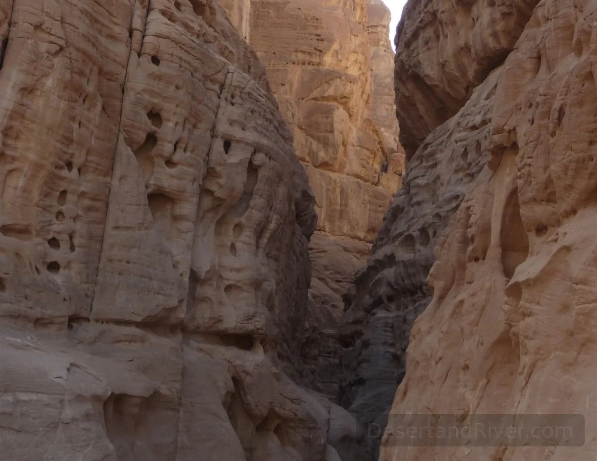
הקניון הסגור
קניון צר ומתפתל ליד נווה המדבר עין חודרה בחצי האי סיני, עם מעברים צרים שדורשים הליכה זהירה.
קירות הקניון מתנשאים בחדות ויוצרים ניגוד בולט בין אור לצל כשעוברים במרחב הצר. במקומות מסוימים הוא כל כך צר שצריך ללכת הצידה, מה שיוצר קרבה נדירה לסלע ומודעות מהורהרת למרחב.
זמן הליכה: כ-30 דקות לכל כיוון; מעברים צרים מאוד.
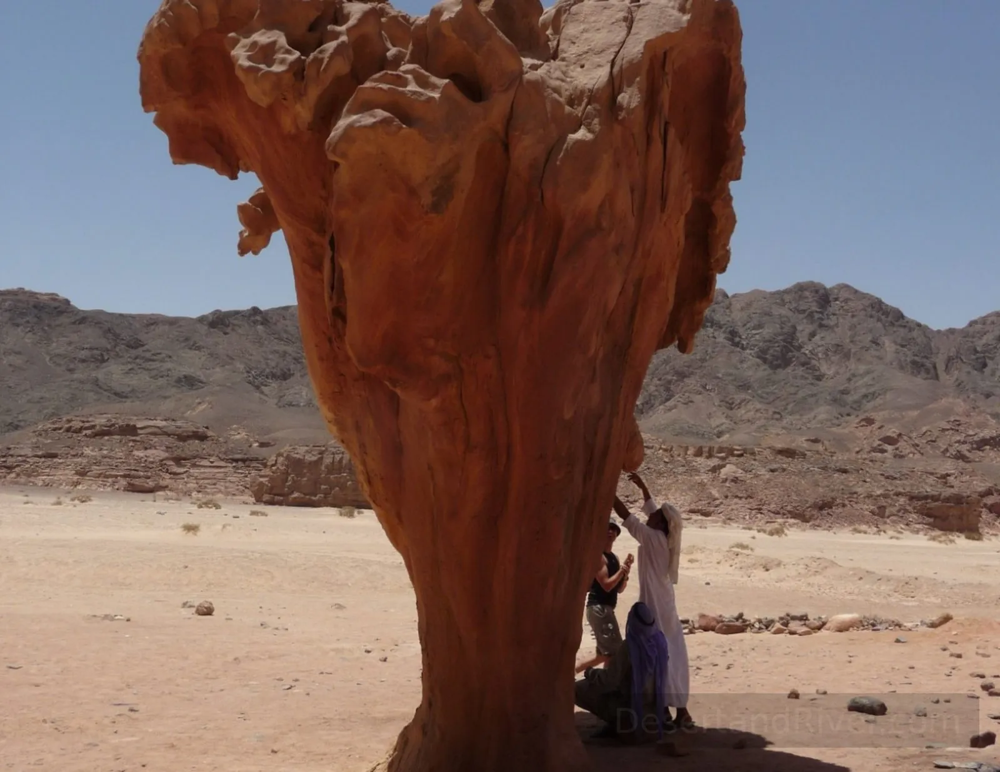
סלע הפטרייה
סלע הפטרייה הוא תצורת אבן חול שנשחקה באופן טבעי במדבר דרום סיני, ועוצבה בידי הרוח לגבעול צר שנושא כיפה רחבה דמוית כובע.
התצורה נמצאת לאורך דרכי מדבר בין ואדי ע'זאלה לעין חודרה, והיא תוצאה של סחיפת רוח ממושכת באבן חול שכבתית. הפרופורציות הייחודיות שלה מדגימות את הכוח ההדרגתי של הרוח בסלע רך יותר, ויוצרות מבנה שנראה מאוזן באופן כמעט בלתי סביר, ומזמין מחשבה על זמן גיאולוגי ועל ההתמדה השקטה של הטבע.
אפשר להגיע ברכב 4x4 עם הליכה קצרה על שטח מדבר שטוח.

נקב חודרה
נקב חודרה הוא ואדי מרוחק בדרום סיני לאורך כביש נואיבה–סנטה קתרינה, שמתחבר לעין חודרה ועוקב אחרי מעבר בעל חשיבות היסטורית.
המסלול עובר ליד סלע הכתובות, שנושא סימנים נבטיים, ערביים ויווניים עתיקים, עדות לחילופי תרבות ארוכים בחצי האי. האבן החשופה והמולבנת מהשמש והמרחבים השקטים מעוררים תחושה עמוקה של עומק הזמן, כאילו הולכים בין שכבות של היסטוריה אנושית וגיאולוגית.
אפשר להגיע ברגל או בגמל דרך כביש נואיבה–סנטה קתרינה; תנאי הליכה בינוניים לאורך הוואדי. כשעה הליכה.
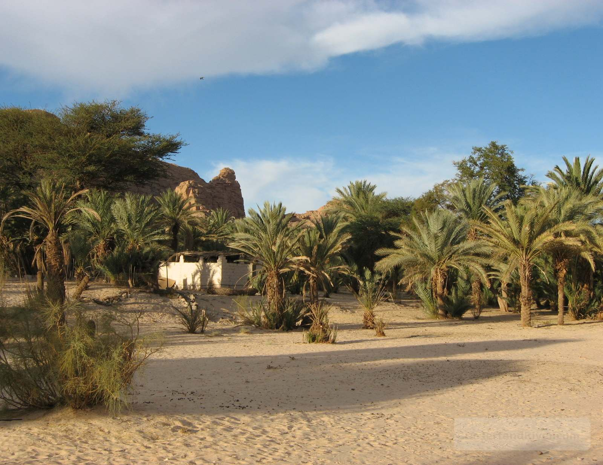
נווה המדבר עין חודרה
עין חודרה הוא נווה מדבר קטן בדרום סיני, שבו מעיינות שזורמים כל השנה מקיימים כתמי צמחייה בנוף צחיח ומחוספס.
נווה המדבר סיפק לאורך ההיסטוריה מים ומחסה לקהילות בדואיות ולמטיילים שחצו את חצי האי סיני, בניגוד נדיר לשטח הצחיח מסביב. רשרוש הדקלים והנצנוץ השקט של הבריכות שמוזנות מהמעיינות מעוררים תחושת שלווה ועצירת זמן, ומדגישים את גודלו של המדבר ואת יופיו העדין.
אפשר להגיע בדרכי שטח

הקניון הלבן
הקניון הלבן הוא ערוץ רחב של אבן חול בחצי האי סיני, בין כביש סנטה קתרינה–נואיבה לנווה המדבר עין חודרה.
קירות אבן החול הבהירים של הקניון עוצבו בסחיפה לאורך אלפי שנים, ומציגים שכבות ומרקמים עדינים שמשקפים את ההיסטוריה הגיאולוגית של האזור. בהליכה במרחב הפתוח מרגישים עצמה שקטה ושלווה מתמשכת, שבה קנה המידה של הנוף מזמין התבוננות והתכווננות איטית לזמן.
אפשר להגיע מכבישים סמוכים, הליכה בינונית של שעה, גובה 950 מטר

עמק מגאזה והקניון
קניון צר בתוך ואדי ע'זאלה בדרום סיני, עם מקומות מוגנים ועצי תאנה בר שהבדואים קוראים להם באופן מסורתי „חמאטה”, ופתוח משני הקצוות.
הקניון יוצר מסלול רציף מכביש נואיבה–סנטה קתרינה לעמק מגאזה, ולוקח כשעה לחצות אותו ברגל. שקט וחמים, יש בו פתחים נסתרים ומחסות טבעיים, ועצי התאנה לאורך השביל יוצרים אווירה מהורהרת שמדגישה את המרחב והשקט של המדבר מסביב.
ההליכה נמשכת כשעה; מתאים ללינה במקומות מוגנים.

ואדי קני
ואדי קני הוא עמק מדבר בדרום סיני, בפנים הארץ מדהב, שמאופיין בתצורות אבן חול, חורשות שיטים ויישובים בדואיים קטנים.
העמק נמצא בין מישור החוף של דהב לרמות הגרניט שבפנים, והוא חלק מרשת רחבה של ואדיות שעוצבו בגשמים עונתיים ובסחיפה. משפחות בדואיות גרות בו ומעבדות חלקים ממנו כבר זמן רב, והוא מציע נוף בקנה מידה אנושי והמשכיות שקטה, שבו החלקות המעובדות מנוגדות בעדינות למרחב הצחיח. הוא קרוב לדהב ונותן טעימה מהמדבר, ומתאים מאוד לארוחת ערב בדואית עם לינה.
אפשר להגיע בדרך עפר מדהב; מתאים להליכות קצרות וטיולים קלים
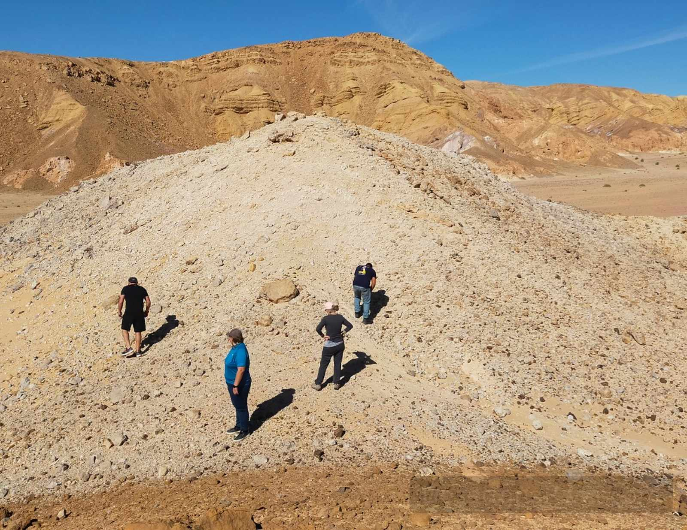
ואדי ג'בי
ואדי ג'בי הוא עמק מדבר מעובד בדרום סיני, שבו חוות קטנות, כתובות עתיקות ועקבות ארכיאולוגיים מתקיימים זה לצד זה בנוף רחב של אבן חול שעוצב בידי זרימת מים עונתית.
כמה חוות משפחתיות פרושות לאורך חלקים מהוואדי, ומגדלות ירקות, פירות, מנגו וזיתים בעזרת מי תהום והשקיה מסורתית. במרכז העמק חרוטות בסלעים כתובות בנות כ-2,000 שנה, ובגבעה סמוכה פזורים כלי אבן ומאובנים גלויים, מה שממקם את החקלאות של היום בשקט בתוך רצף ארוך בהרבה של זמן אנושי וגיאולוגי.
אפשר להגיע ברכב 4x4; הקדישו שעה-שעתיים להליכה בין החוות, הכתובות והגבעה הארכיאולוגית.

נואמיס
הנואמיס הם מבני אבן עגולים פרהיסטוריים במדבר הגבוה של דרום סיני, מתקופת הברונזה הקדומה, שקשורים לקהילות הרועים הראשונות.
החדרים הנמוכים האלה מאבן יבשה פזורים על רמות מרוחקות בין הרי הפנים למפרץ אילת, והם מהמבנים המקורים העתיקים ביותר במצרים, שנבנו בסביבות האלף הרביעי לפנה"ס. הפתחים הקטנים שלהם פונים בדרך כלל מערבה, מה שמרמז על משמעות פולחנית או קבורתית; כשעומדים ביניהם, מרגישים בחדות את השקט העצום ואת עומק הזמן האנושי שטבוע בנוף המדבר.
הכי טוב להגיע ברכב 4x4; מגיעים לאתרים בדרך כלל בדרכי מדבר קשות ממרכז דרום סיני.

כפר הנואמיס
כפר הנואמיס בחצי האי סיני הוא יישוב קטן ליד קברי אבן עגולים עתיקים, שידוע באימון גמלים ובאורח החיים הבדואי המסורתי.
בכפר חיים בני אדם לצד עזים, תרנגולות, יונים וברווזים, בקשר הדוק בין אנשים, בעלי חיים וילדים בסביבה פתוחה ללא גדרות. הקצב היומיומי הזה מתנהל לצד קברי האבן השקטים מתקופת הברונזה הקדומה, ויוצר תחושה שקטה של המשכיות בין עבר להווה. הגמלים שמאומנים למרוצים מוסיפים ניגוד חי ועדין לשקט של מישור המדבר מסביב.
ההליכה בכפר ובין הקברים קלה, על שטח מדבר שטוח.

ג'בל אל-מטאמיר
ג'בל אל-מטאמיר הוא גוש הררי שעוצב בידי הרוח במרכז סיני, שבו סלעים מכוסי חול מתרוממים מרמת המדבר, וקווי המתאר הנסתרים שלהם משקפים את משמעות השם „מטאמיר”.
האבנים הגדולות של הגוש קבורות בחלקן בחול, ועוצבו לאורך זמן בידי רוחות מדבר מתמשכות, כך שנוצר נוף של צורות נסתרות ומרקמים עדינים. המשחק השקט הזה בין אבן לחול מעורר תחושה של הסתר ושלווה, במפגש מהורהר עם השינויים האיטיים והמתמשכים של המדבר.
זמן הליכה משוער לאורך הרכס הראשי: 2–3 שעות.

ג'בל מח'רום (הר ראש הדרקון)
ג'בל מח'רום, או הר ראש הדרקון, הוא פסגת אבן חול בדרום סיני, שעוצבה בידי רוח וחול כך שהיא נראית כמו ראש של דינוזאור עם חלל „עין”.
סחיפת הרוח חצבה חור ייחודי שמזכיר עין של דינוזאור, והרכסים מסביב מרמזים על שיניים וקווי לסת. הפיסול הטבעי הזה מדגיש את קנה המידה המחוספס של הנוף, ומעניק תחושה מהורהרת של כוחות הזמן הסבלניים שמעצבים את מדבר סיני.
גובה כ-820 מטר; הליכה בינונית

דיונת חדודה
דיונת חדודה היא תצורת מדבר רחבה בדרום סיני, שמאופיינת בחולות גליים ועדינים שעוצבו בידי הרוח ודפוסי אקלים עונתיים.
הדיונה נמצאת בנופים הצחיחים שמחברים את הרי סיני למישורי המדבר הנמוכים, ומעניקה תחושה שקטה, כמעט מדיטטיבית, של פתיחות. קווי המתאר החלקים והנודדים שלה משקפים את חלוף הזמן האיטי, שבו עקבות נעלמים מהר והאופק נמתח בלי הפרעה.
ההליכה על הדיונה קצרה, וזה מקום מעולה לגלישת חול.
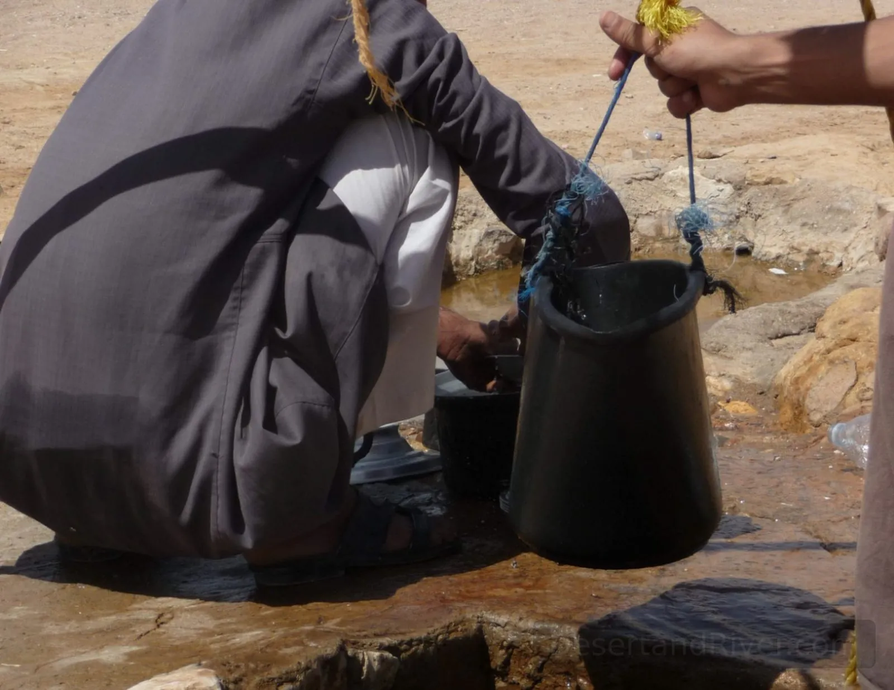
באר ספרא
באר ספרא היא באר מדבר בדרום סיני, שנחפרה ב-1986 כדי לספק מי שתייה לבעלי החיים של יישוב בדואי שננטש מאז.
הבאר נמצאת בין מישורי אבן חול רחבים, וסיפקה מים אמינים לצאן ולתושבים, אף שהיישוב כבר לא קיים. המים הצלולים שלה משקפים את שמי המדבר הרחבים, ומעוררים תחושה שקטה של עמידות ושל עקבות עדינים של נוכחות אנושית בנוף נצחי.
אפשר להגיע ברכב 4x4

דיונת ספרא
דיונת ספרא היא תצורת מדבר בולטת בדרום סיני, שנקראת על שם החול הצהוב הייחודי שלה („ספרא” פירושו צהוב בערבית), על רקע הרים צחיחים.
הדיונה היא חלק מנוף המדבר הרחב של סיני, שעוצב במשך אלפי שנים בידי רוח ושינויי טמפרטורה עונתיים. המדרונות הזהובים והחלקים שלה, שמושלמים לגלישת חול, מעוררים תחושה שקטה של זמן עומד, ומזמינים התבוננות באופק הרחב והמשתנה.
העלייה לפסגה לוקחת כ-15 דקות, ויכולה להיות מאתגרת קרוב לפסגה בגלל החול הרך והעמוק.

כפר ערדה
כפר ערדה הוא יישוב קטן לצד הדרך בדרום סיני, בין נואיבה לכביש סנטה קתרינה, שבו חיי הבדואים המסורתיים ממשיכים לצד מלאכות יד.
הכפר מורכב ממבנים צנועים שבהם התושבים אורגים, טווים ועוסקים במלאכות יד אחרות, ושומרים על מסורת תרבותית לאורך הדורות. הזמן כאן נע לאט, לפי קצב העבודה היומית ונוף המדבר החשוף, ומעניק תחושה שקטה של המשכיות ונוכחות.
אפשר להגיע בכביש; הליכה בכפר נמשכת כ-20–30 דקות.

ואדי ערדה
ואדי ערדה הוא עמק מדבר מרוחק בדרום סיני, הידוע בתצורות אבן החול המחוספסות ובכתובות הסלע העתיקות על מדרונותיו.
בעמק יש פטרוגליפים רבים שמתארים היבטים של חיי היומיום, בדומה לסצנות במקדשי סיני, כולל חריטה מרשימה של חתול בר, כנראה נמר או אריה, שמשוערת כבת 8,000 שנה, מהתקופה שבה האזור דמה לסוואנה. אור השמש על הכתובות מדגיש את עמידותן, ומזמין מחשבה על חייהם של מי שעברו פעם בנוף השקט הזה. מלא סלעים צבעוניים וכתובות.
אפשר להגיע בהליכה של שעה מכביש סנטה קתרינה–נואיבה. הליכה קלה.

קניון ערדה (הקניון הכפול)
קניון ערדה, או הקניון הכפול, הוא תצורת אבן חול בדרום סיני, עם שני ערוצים מחוברים שעוצבו בסחיפה, ורמה שבה רואים מאובנים ימיים עתיקים.
הקניון קיבל את שמו משני המסלולים: מטפסים בערוץ אחד ויורדים בשני בקצה, לאורך אבן שמזכירה את קניון אנטילופה האמריקאי. על הרמה, אלמוגים ויצורים ימיים מאובנים מזכירים את קרקעית הים הקדומה של האזור, והמעבר הצר מעניק תחושה שקטה של קנה מידה ועומק זמן.
המעבר המלא בקניון הכפול, כולל טיפוס וירידה, לוקח כשעה עד שעה וחצי.

קניון היונים
קניון היונים הוא עמק רחב ונמוך של אבן חול בדרום סיני, שבו יוני בר חיות במחסות סלע טבעיים בקרקעית ובמדרונות.
הקניון נמתח בעדינות על פני שטח צחיח, ומשמש בית גידול ליונים שחיות באופן טבעי בין הסלעים ולא מגודלות בידי אדם. אור השמש נע לאט על הקירות הרחבים והנמוכים, ומדגיש מרקמים ודפוסים שיוצרים תחושה עדינה של רוגע.
כשעה הליכה; קל.
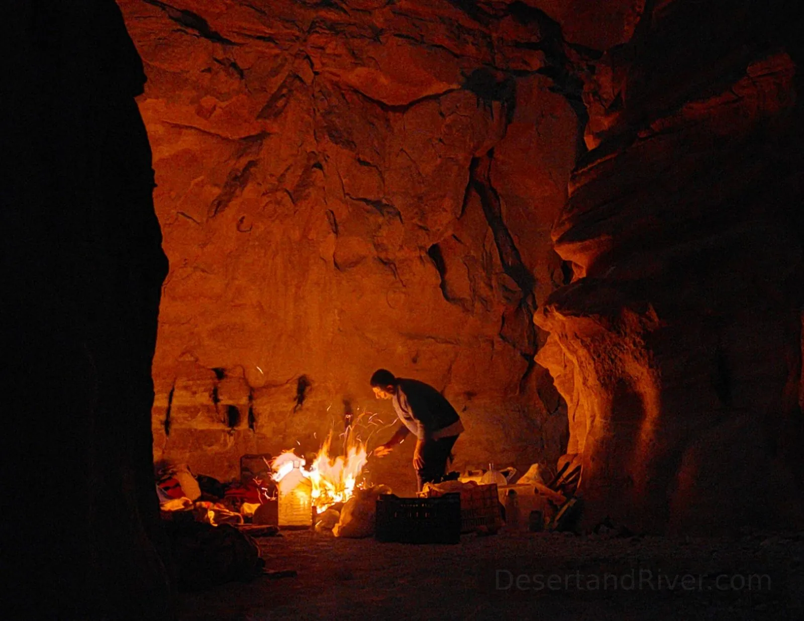
קניון הזיגזג
קניון הזיגזג הוא ערוץ אבן חול בדרום סיני, שנקרא על שם הפניות החדות שלו. הוא נמצא ליד כביש סנטה קתרינה–נואיבה ויוצר מסדרון גיאולוגי קומפקטי.
המסלול המזגזג הייחודי משקף אלפי שנים של סחיפה, שיצרה מרחבים אינטימיים בין קירות אבן החול השכבתיים. נעים מאוד לבלות כאן לילה באור רך של נרות, עם תחושה שקטה ומהורהרת של מחסה ושלווה.
ההליכה הלוך ושוב לוקחת כ-30 דקות; קושי בינוני

ג'בל גונה
ג'בל גונה הוא הר של אבן חול במרכז סיני, הידוע בגאודות, בארובות האבן ובפתחים הגאותרמיים שבפסגתו.
בפסגה יש פתחים גאותרמיים שנמצאים בדרך כלל רק מתחת לים, רמז למקורו הימי הקדום של ההר. ארובות אבן מסמנות את הפתחים, וגאודות פזורות קולטות את אור המדבר, ויוצרות תחושה שקטה ומהורהרת של זמן ושל השינוי הגיאולוגי האיטי של האדמה.
כשעה הליכה מכביש סנטה קתרינה–נואיבה, קושי בינוני.

מנזר סנטה קתרינה
מנזר סנטה קתרינה, למרגלות הר סיני בדרום מצרים, הוא המנזר הנוצרי הפעיל העתיק בעולם, עם חיי נזירות רצופים מאז המאה השישית.
המנזר נוסד בחסות ביזנטית, ושומר כתבי יד, איקונות ושרידים עתיקים שמשקפים מאות שנים של פולחן דתי רצוף. מוקף בהרים מחוספסים, החצרות השקטות ומבני האבן הצנועים מעוררים שלווה מהורהרת, בניגוד לנוף המדבר הקשה שבחוץ.
בגובה 1,580 מטר מעל פני הים; נגיש כל השנה בשבילי הליכה בינוניים.

המדבר הכחול
המדבר הכחול הוא אזור מרוחק בדרום סיני, הידוע בגבעות אבן חול בהירות עם גוון כחלחל ממרבצי מינרלים ובתצורות סלע צבועות פה ושם.
ב-1979 צבע האמן הבלגי ז'אן ורם כמה קירות סלע כאן בכחול עז כסמל לשלום, והוסיף שכבה אנושית לקווי המתאר הטבעיים של המדבר. הנוף הרך והעמום, עם נגיעות הכחול, מעורר שקט והתבוננות, בניגוד שקט להרים ולעמקים מסביב.
אפשר להגיע ברכב 4x4

הר סיני
הר סיני הוא פסגת גרניט בולטת בדרום חצי האי סיני, בעל חשיבות היסטורית ודתית כמקום ההתגלות המקראי.
הר סיני מתנשא לגובה 2,285 מטר, והוא חלק מנוף המדבר המחוספס שבין סנטה קתרינה לים האדום. המדרונות החשופים והפסגה השקטה מעוררים תחושה עמוקה של בדידות ועומק זמן, ומחברים את המבקרים לעוצמה של הטבע ושל ההיסטוריה גם יחד.
גובה: 2,285 מטר; העלייה נמשכת בדרך כלל 2–3 שעות מהשבילים שלמרגלות ההר.

פרש אליהו
רמה מרוחקת בסיני, בערך באמצע הדרך בין מנזר סנטה קתרינה לפסגת הר סיני, עם שטח מחוספס וצמחייה דלילה.
פרש אליהו מציע נוף סלעי וגבוה שעוצב בסחיפה במשך אלפי שנים, עם תצפיות פנורמיות על העמקים מסביב ועל הרים רחוקים. הרמה מעניקה תחושה שקטה של בידוד, שבה שקט המדבר מדגיש את קנה המידה והיציבות של השטח: הפסקה מהורהרת בין המנזר למטה לפסגה למעלה.
אפשר להגיע בהליכה בינונית של שעה וחצי-שעתיים מהמנזר לכיוון הר סיני.

הר קתרינה
הר קתרינה הוא הפסגה הגבוהה ביותר בחצי האי סיני, ליד סנטה קתרינה, גוש בולט של גרניט ואבן חול בנוף מדבר מחוספס.
להר חשיבות היסטורית בזכות הקרבה למנזר סנטה קתרינה והקשר לעלייה לרגל, והוא מתנשא בחדות מעל המישורים שמסביב ויוצר ניגוד חזותי חד. המרחבים השקטים והתצפיות הרחבות מעניקים תחושה עמוקה של שלווה וקנה מידה, ומזמינים התבוננות בנוף ובזמן.
גובה: 2,634 מטר; בדרך כלל טיפוס קשה של 2–3 שעות מסנטה קתרינה.

ואדי ארבעין
ואדי ארבעין הוא עמק רחב וצחיח בדרום סיני, שמחבר את הר קתרינה למנזר הסמוך ומנקז מי שיטפונות עונתיים דרך רכסי אבן החול מסביב.
הוואדי יוצר מסלול הליכה של שעה בין ההר למנזר, וקרקעיתו מכוסה חצץ פזור וצמחיית מדבר דלילה. בהליכה בו, קנה המידה של הרכסים שמקיפים אותו מעניק תחושה שקטה של שלווה ושל חלוף הזמן הגיאולוגי האיטי, ומזמין התבוננות בנוף המחוספס.
שעת הליכה; שטח בינוני שמתאים לרוב המטיילים.

שייח' מוחסין
שייח' מוחסין הוא בליטת סלע צנועה במדבר דרום סיני, הידועה בסידורי אבן מתקופת האבן, בצמחייה דלילה ובקרבה למישורי אבן החול מסביב.
באתר יש אבנים שסודרו בידי תושבים קדומים, עדות מוחשית לפעילות אנושית שמגיעה עד תקופת האבן. המרחבים השקטים של סלע באוקר ואדמה צרובת שמש מעוררים תחושת שלווה נצחית, ומחברים את המבקרים בעדינות לעומק ההיסטוריה ולקנה המידה המחמיר של המדבר.
אפשר להגיע בדרכי עפר במדבר
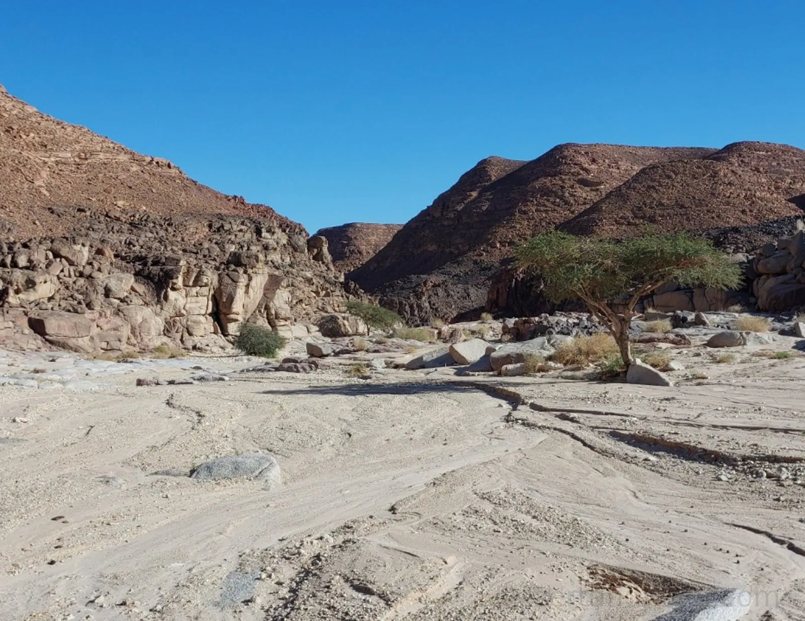
ואדי זרניק
ואדי זרניק הוא עמק יבש במרכז סיני, שיוצר מסדרון טבעי של אבן חול ושטח מדברי, ומשמש באופן מסורתי דרך בדואית שמחברת בין יישובים.
הוואדי נמתח על פני הרים ומישורים מחוספסים, והמרחב הרחב שלו מעביר תחושה שקטה ומתמשכת של גודל המדבר וההיסטוריה שלו. מטיילים חוצים אותו לרוב ברכב, בדרך שמשמשת כבר זמן רב לתנועה ולמסחר מקומיים.
הנסיעה בוואדי זרניק נמשכת כשעתיים-שלוש.

מערת זרניק
מערת זרניק היא תצורת אבן גיר במדבר דרום סיני ליד ואדי זרניק, הידועה בציורי הקיר הצבעוניים העתיקים שלה, בני כ-12,000 שנה.
בתוך המערה השתמרה אמנות פרהיסטורית חיה, הצצה נדירה לביטוי האנושי המוקדם באזור. כשנכנסים למרחב הקריר והמוצל, חווים ניגוד בולט למדבר המואר שבחוץ, שמעורר תחושה של המשכיות עמוקה בזמן ומחשבה שקטה על אלפי שנים של נוכחות אנושית.
אפשר להגיע בהליכה קצרה של 20 דקות מדרך המדבר הראשית.
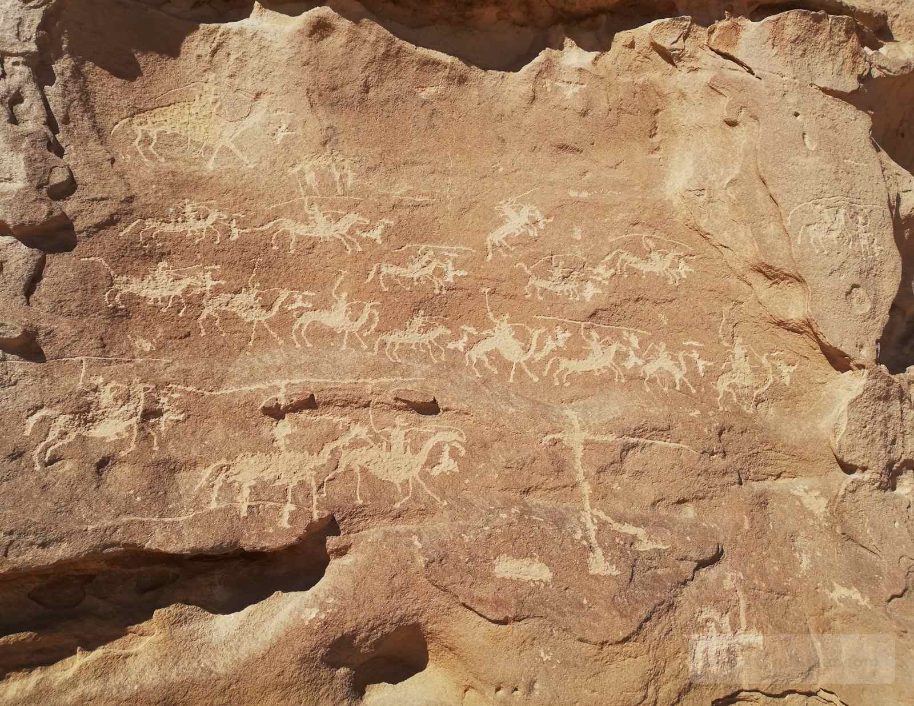
סצנת המלחמה הנבטית
סצנת המלחמה הנבטית היא תבליט סלע עתיק בדרום סיני, שמתאר דימויים צבאיים נבטיים שחקוקים בצוקי אבן החול לאורך דרכי מסחר היסטוריות.
התבליט מתוארך כנראה לתחילת האלף הראשון לספירה, ומתאר דמויות חמושות וגמלים במערך דינמי, שמשקף את הנוכחות הצבאית והתרבותית של הנבטים באזור. פני השטח הבלויים והמיקום המרוחק מעבירים תחושה שקטה של עמידות וחלוף הזמן, ומזמינים מחשבה על המאמץ האנושי מול נוף המדבר העצום.
אפשר להגיע ברכב 4x4

ואדי פיראן
ואדי פיראן הוא הוואדי הגדול והפורה ביותר בדרום סיני, עמק מדבר רחב של חורשות דקלים ויישובים צפון-מערבית לסנטה קתרינה.
העמק קשור זה מכבר לנזירות הנוצרית הקדומה, ולעיתים מזוהה עם רפידים המקראית. בין הגנים המעובדים השתמרו עקבות של כנסיות ביזנטיות ומגורי נזירים מתבודדים. מוקף בהרי גרניט, הירק הבלתי צפוי שלו קוטע את היובש מסביב, ויוצר תחושה שקטה של המשכיות בין היישוב הקדום לקצב חיי הבדואים של היום.
כ-130 ק"מ צפון-מערבית לשארם א-שייח'; נגיש כל השנה בכביש סלול.

מנזר שבע הנזירות
מנזר שבע הנזירות, בדרום סיני ליד הר סיני, הוא אתר דתי היסטורי קטן שקשור לנוכחות הנזירית הנוצרית הקדומה במדבר סיני.
המנזר קשור באופן מסורתי לאדיקות הנוצרית הקופטית, ומשקף את המורשת הסגפנית שהתפתחה סביב הר סיני מסוף העת העתיקה. בנוף הררי וצחיח, מבני האבן הצנועים והסביבה השקטה מעוררים את השלווה שאליה כמהו הנזירים הראשונים, ומעניקים למבקרים תחושה מוחשית של בידוד שעוצב בידי אור המדבר, הרוח והזמן.
אפשר להגיע בדרך מדבר קשה; התנאים משתנים
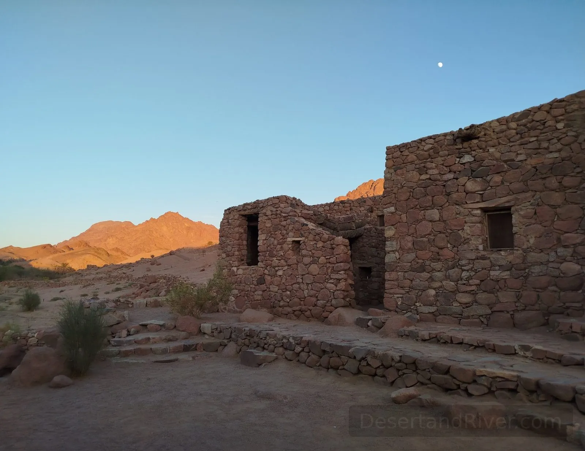
אכסניית אל-כרם האקולוגית
אכסניית אל-כרם האקולוגית היא אכסניית מדבר קטנה שנבנתה באופן בר קיימא בדרום סיני, משלבת חומרים מקומיים ושיטות בנייה מסורתיות בנוף בדואי הררי.
האכסניה נבנתה מחומרים מקומיים מתכלים ובטכניקות בנייה אזוריות, ומשקפת מסורות מדבר ותיקות שהותאמו לדאגות אקולוגיות של היום. קירות האדמה והחצרות הפתוחות ממתנים את החום וממסגרים אופקי הרים רחבים, שבהם השקט והאור המשתנה מחדדים את המודעות לקנה מידה, לזמן ולפשטות היסודית.
נמצאת בדרום סיני, כשעה-שעתיים נסיעה מדהב, תלוי בתנאי דרך המדבר.

שייח' עוואד
שייח' עוואד הוא אתר מדבר עתיק בדרום סיני, הידוע בשרידים מתקופת האבן ובמיקומו בנוף ההרים הגבוה בין הוואדיות הפנימיים למישורי החוף.
העקבות הארכיאולוגיים באזור כוללים מבני אבן וכלי אבן שמיוחסים ליישוב אנושי מוקדם, עדות למגורים שמגיעים עד תקופת האבן. התצורות הפזורות של אבן מעובדת מול שטח הגרניט החשוף מעוררות המשכיות שקטה של נוכחות אנושית, שבה קנה המידה של הזמן הגיאולוגי מגמד חיים בודדים ובכל זאת שומר על חותמם.
נמצא בפנים ההררי של דרום סיני; אפשר להגיע ברכב 4x4 בדרכי מדבר.
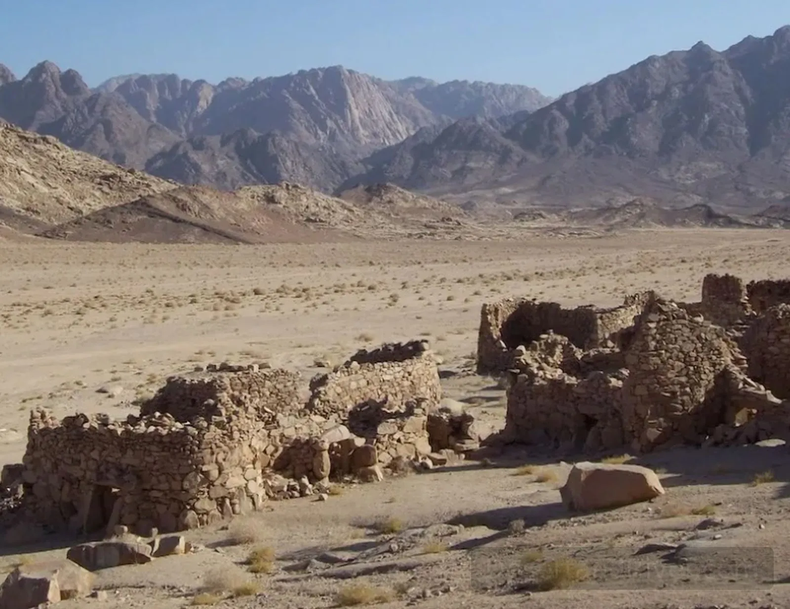
הכפר הנבטי
הכפר הנבטי ליד סנטה קתרינה בדרום סיני הוא יישוב מדבר ארכיאולוגי ששומר את שרידי האבן של קהילת סוחרים שקשורה לנבטים.
האתר נמצא בפנים ההררי של דרום סיני, ולרוב מגיעים אליו דרך אזור אל-כרם. הוא מורכב ממבני אבן נמוכים ובלויים שמשתלבים בשטח הצחיח. הנבטים, שידועים ברשתות המסחר האזוריות שלהם סביב פטרה, החזיקו דרכים לרוחב סיני, והיישוב הזה משקף את ההסתגלות שלהם לסביבה מדברית קשה. בהליכה בין השרידים מרגישים יותר את קנה המידה של הזמן מאשר של האדריכלות.
אפשר להגיע ברכב 4x4

ואדי סלאף
ואדי סלאף הוא עמק מדבר בעל חשיבות היסטורית במחוז דרום סיני, שיוצר מסדרון מרכזי דרך שטח הררי לכיוון אזור סנטה קתרינה.
הוואדי נמצא בין תצורות גבוהות מהפרה-קמבריון של מיגמטיט, גנייס ואמפיבוליט, ושימש זמן רב דרך שמחברת את ואדי פיראן עם ואדי א-שייח', ובשנות ה-20 של המאה העשרים נסללה בו דרך לרכבים. שרידים ארכיאולוגיים, כולל נואמיס פרהיסטוריים ועקבות של כריית נחושת קדומה באזורים סמוכים כמו ואדי נסב, מעידים על נוכחות אנושית מתמשכת; גודל העמק וקירות הסלע שהושחרו במינרלים מעוררים מודעות שקטה לזמן גיאולוגי והיסטורי.
אפשר להגיע ברכב 4x4
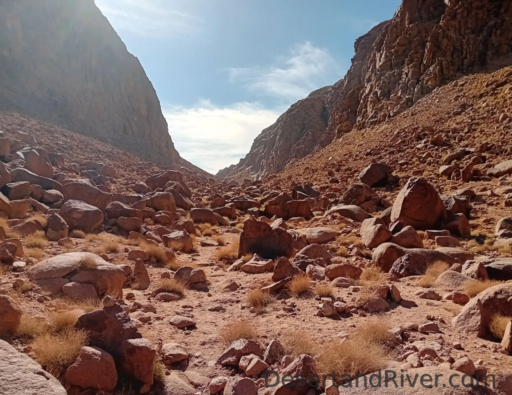
ואדי איסלה
ואדי איסלה הוא עמק מדבר הררי במחוז דרום סיני, ליד א-טור וסנטה קתרינה, שבולט בתצורות הגרניט ובשטח הצחיח והמחוספס שלו.
ואדי איסלה נמצא בין א-טור לסנטה קתרינה, והוא חלק ממערכת הרי הגרניט שמגדירה את פנים דרום סיני. המעברים הצרים וקירות הסלע הבלויים חושפים תהליכים גיאולוגיים של אלפי שנים, וקנה המידה השקט של הנוף מעורר מודעות לזמן שלא נמדד בשעות, אלא באבן.
מסלולי הליכה רגילים בוואדי נמשכים 2–4 שעות, תלוי בקצב ובנקודת הכניסה.

ואדי חברן
ואדי חברן הוא עמק מדבר רחב בדרום סיני, הידוע בדרכי הבדואים המסורתיות ובמבני אבן פרהיסטוריים ייחודיים שנקראים נואמיס לאורך גדותיו.
בעבר שימש ואדי חברן מסדרון מעבר ומרעה שחיבר את יישובי ההרים לחוף הים האדום. שני נואמיס על גדות הוואדי מוארים בקרני השמש השוקעת, יישור עדין שאולי סימל את סוף החיים, ומזמינים מחשבה על הקשר בין פולחן אנושי, זמן ונוף המדבר העצום.
אפשר להגיע ברכב 4x4; חציית הקטע המרכזי נמשכת בדרך כלל 2–3 שעות, תלוי במסלול ובתנאים.

ואדי מוכתב
ואדי מוכתב בדרום סיני הוא עמק צחיח הידוע במגוון הרחב של כתובות עתיקות שחרוטות בקירות הסלע.
האתר שומר תיעוד מרשים של פטרוגליפים נבטיים וטרום-נבטיים, כולל מוטיבים גיאומטריים וכתבים מוקדמים, שמשקפים את רשתות המסחר והתרבות ההיסטוריות של האזור. בהליכה בין האבנים הבלויות מרגישים את חלוף הזמן האיטי ואת השקט המתמשך של נוף המדבר הזה.
אפשר להגיע בהליכה בינונית של שעה-שעתיים
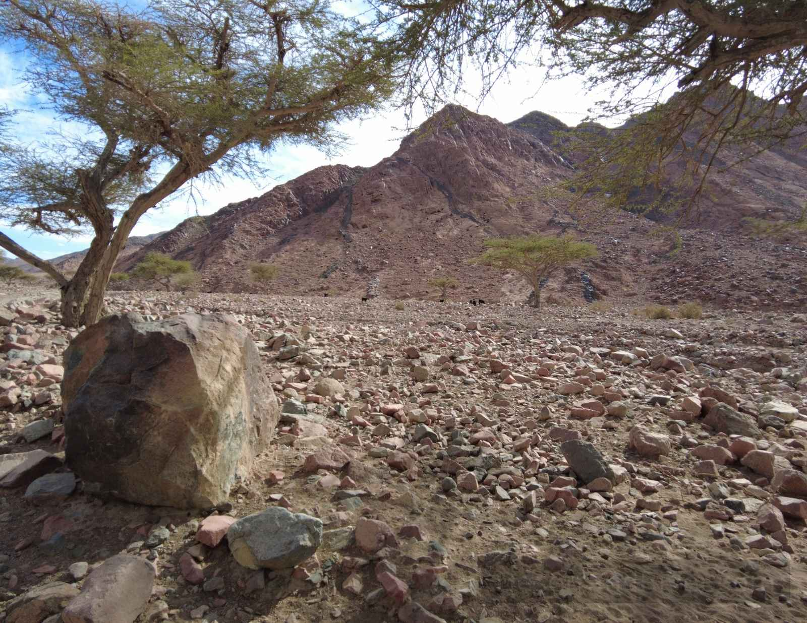
ואדי א-סיח
ואדי א-סיח הוא עמק מדבר מבודד בדרום סיני, עם תצורות סלע מחוספסות, ערוצי מים לסירוגין ועקבות של פעילות אנושית קדומה.
הוואדי משתרע בנוף הצחיח ומציע הצצה להיסטוריה הגיאולוגית של סיני ולצמחייה הדלילה והעמידה שלו. בהליכה בקרקעית מרגישים את השקט ואת קנה המידה של הזמן, כשהדממה נקטעת רק בלחישת הרוח מעל האבנים.
אפשר להגיע ברכב 4×4; נדרשת הליכה בינונית

ואדי מע'ארה
ואדי מע'ארה הוא עמק יבש בדרום סיני, הידוע במערות פרהיסטוריות, בכתובות עתיקות ובכמה ממכרות הטורקיז המצריים העתיקים ביותר הידועים, מימי המלך השביעי של השושלת הראשונה.
בוואדי יש כתובות בנות יותר מ-4,700 שנה, שמתארות דמויות בגובה שווה מחזיקות יד של ילד, ייצוג נדיר של שוויון באמנות המצרית העתיקה. לצד שרידי קבורה ופטרוגליפים, המרחבים המדבריים השקטים מעבירים תחושה עמוקה של המשכיות וחיבור אנושי לאורך אלפי שנים.
אפשר להגיע ברכב 4x4

ואדי באבא
ואדי באבא הוא אגן ניקוז רחב וצחיח בדרום-מערב סיני, שמנקז מים למפרץ סואץ וכולל שטח גרניט מחוספס עם היסטוריה רבת שכבות.
בוואדי יש עקבות של פעילות אנושית מהתקופות הפרעונית, הנבטית, הנוצרית והמוסלמית, כולל חורבות וכתובות פזורות. בנוף החשוף, משחק האור על רכסי הגרניט מעביר שלווה נצחית, ותחושה עדינה של חיבור להיסטוריה המתמשכת של האזור.
אפשר להגיע ברכב 4x4; שיטפונות פתע נפוצים בגשמים הנדירים.

ואדי ע'רנדל
ואדי ע'רנדל הוא עמק מדבר רחב במערב דרום סיני, הידוע במעיינות המים המתוקים העונתיים ובקבוצות הדקלים בנוף צחיח.
הוואדי נמצא במישור החוף שבין מפרץ סואץ לפנים סיני, והוא חלק ממערכת דרכים עתיקה שחיברה את מצרים ללבנט. בניגוד לעמקים יבשים רבים באזור, זורמים בו מים מדי פעם וגדלה בו צמחייה קלה, מה שיוצר ניגוד בולט בין אבן, חול וירק: תזכורת שקטה לעמידות בתוך שממה לכאורה.
אפשר להגיע ברכב 4x4

עיון מוסא
עיון מוסא, מעיינות משה, הם קבוצת מעיינות מים מתוקים בדרום סיני ליד מפרץ סואץ, שקשורים לסיפור משה בתנ"ך ובקוראן, ושימשו מאוחר יותר עמדה צבאית בתקופת השליטה הישראלית בחצי האי.
המעיינות נמצאים במישור מדבר דליל צמחייה, והבריכות הצנועות וחורשות הדקלים יוצרות ניגוד עמום לנוף הצחיח מסביב. באמצע המאה העשרים הוביל המיקום האסטרטגי של האזור לשימוש בו כמעוז מבוצר בידי כוחות ישראליים בתקופת השליטה בסיני (1967–1982), ושרידיו, כמו סוללות עפר ועמדות הגנה, עדיין נראים לצד אנדרטאות לפעולות צבאיות מצריות מאוחרות יותר.
כ-25–30 ק"מ דרומית למנהרת אחמד חמדי, ונגיש בכביש.

ואדי נסב
ואדי נסב הוא עמק יבש בדרום סיני, הידוע בשרידים ארכיאולוגיים נרחבים של התכת נחושת עתיקה ופעילות תעשייתית קשורה בנוף המדבר המחוספס של חצי האי.
ואדי נסב נמצא בגובה של כ-355 מטר מעל פני הים בדרום-מערב סיני, והיה מוקד לעיבוד מינרלים מהממלכה הקדומה ועד תקופות מאוחרות, שבו עפרת נחושת הפכה למתכת במתחם של כבשנים, מבני מנהל ועמדות תצפית. כמות הסיגים ושרידי המבנים מעידה על ייצור מתמשך ועל החותם הנשאר של המאמץ האנושי בשטח החשוף וצרוב השמש הזה.
גובה: כ-355 מטר מעל פני הים, עם שכבות ארכיאולוגיות שמשקפות פעילות מתכות עתיקה ונבטית ממושכת.
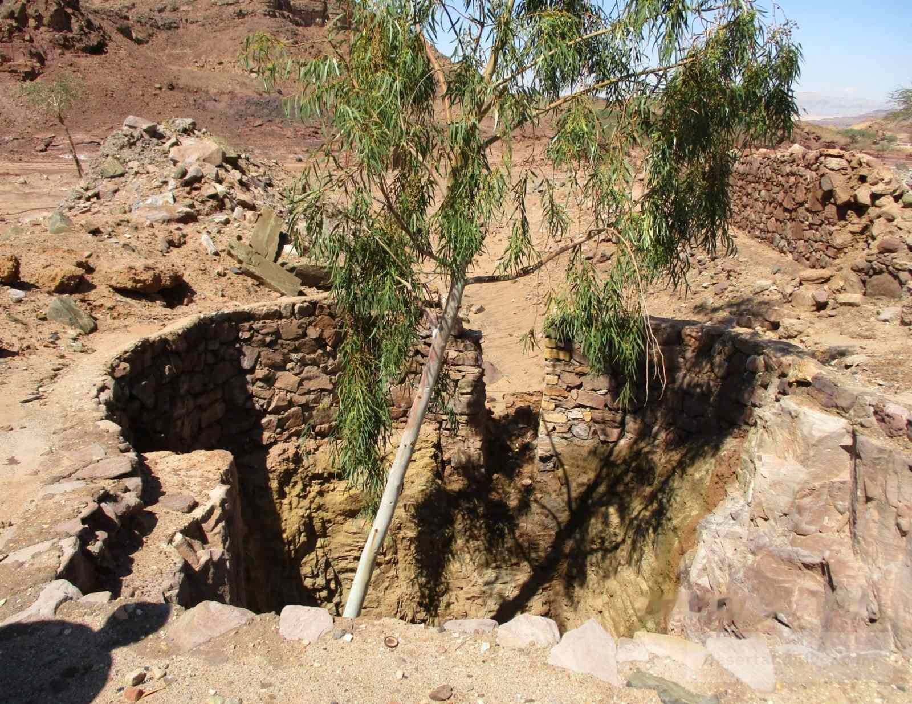
ביר נסב
ביר נסב היא באר מים בפנים המחוספס של מחוז דרום סיני, במרחב הצחיח של רמות המדבר של חצי האי.
ביר נסב נמצאת בגובה של כ-917 מטר מעל פני הים, ומסמנת מקור מסורתי של מי תהום בנוף יבש, שבו רוחות עונתיות ושעות אור ארוכות יוצרות תחושה מוחשית של מרחב. הבאר משקפת אלפי שנים של הסתגלות אנושית לאקלים של סיני, ושימשה בעבר ציון דרך לנוודים ולמשלחות כרייה מזדמנות בוואדי נסב הסמוך.
גובה כ-917 מטר מעל פני הים; בדרום סיני, מצרים.

רוד אל-עיר
רוד אל-עיר הוא ואדי מדברי בחצי האי סיני, בדרך למקדש סרביט אל-חאדם, עם כתובות עתיקות ועקבות של חיות בר מהתקופה הפרעונית.
בוואדי יש חריטות סלע של סירות, ג'ירפות ובעלי חיים אחרים מהתקופה הפרעונית, כולל מה שנחשב לסמל דמוי „האשטאג” העתיק ביותר באזור. ההליכה בין הפטרוגליפים האלה מעוררת חיבור שקט לאנשים שעברו בנוף הזה לפני אלפי שנים, ולמערכת האקולוגית שבה חיו ושנעלמה מאז.
אפשר להגיע ברכב 4x4; בדרך למקדש סרביט אל-חאדם

סרביט אל-חאדם
סרביט אל-חאדם בדרום-מערב סיני הוא אתר ארכיאולוגי עתיק של כריית טורקיז ונחושת בהיקף נרחב, עם שרידי מקדש חתחור וכתובות אלפביתיות מוקדמות.
באתר שבראש הרמה עבדו מצרים קדומים ופועלים מהמזרח הקרוב לפחות מימי הממלכה התיכונה, ויש בו מקדש לחתחור, מגינת המדבר ו„גבירת הטורקיז”. המצבות הפזורות וכתובות הסלע בכתב פרוטו-סינאי מוקדם, שחרוטות באבן המולבנת מהשמש, מעידות על קשר אנושי ארוך עם הנוף הגבוה וסחוף הרוחות הזה, שבו שפה ואמונה נחרטו באבן.
כ-43 ק"מ מזרחית לאבו זנימה, על רמה בגובה של כ-850 מטר מעל פני הים.

מע'ארת א-טליחה
מע'ארת א-טליחה היא מערת אבן גיר בדרום סיני, הידועה בכתובות פרהיסטוריות בכתב פרוטו-סינאי ובהירוגליפים מצריים, ליד מכרות טורקיז עתיקים.
במערה נמצאות הדוגמאות העתיקות ביותר הידועות של האלפבית הפרוטו-סינאי לצד כתובות הירוגליפיות, שילוב שתועד לראשונה בידי הארכיאולוג פלינדרס פטרי. בפנים שוררת תחושה מושתקת של זמן עוצר, שבה הכתב המוקדם ומכרות הטורקיז הסמוכים משקפים גם את היצירתיות וגם את העמל של עמים קדומים בנוף הרחב של סיני.

אום יאסר
אום יאסר, אישה בדואית חלוצה משבט חמאדה, היא המדריכה הראשית הראשונה בשביל סיני, ומובילה טרקים שחוקרים את הנופים והתרבות של דרום סיני.
מאז 2019 אום יאסר מדריכה בשביל סיני, שנשלט באופן מסורתי בידי גברים, בעיקר קבוצות נשים, ומשתפת בידע על הצמחייה המקומית, ההיסטוריה ואורח החיים הבדואי. הנוכחות שלה משדרת עמידות והמשכיות שקטות, כשהיא מחברת מסורות בנות מאות שנים לאפשרויות חדשות לנשים באזור.
התחילה להדריך ב-2019; המדריכה הראשית הבדואית הראשונה בשביל סיני.

ואדי א-סהו
ואדי א-סהו הוא ואדי מרוחק בדרום סיני, עם כפר בדואי מבודד וכתובות סלע עתיקות מהתקופות הפרעונית, הנבטית והפרהיסטורית.
בכפר גרים בעיקר בני שבט חמאדה, והוא מעניק למבקרים הצצה לחיים ולהכנסת האורחים הבדואיים המסורתיים, שבולטת במיוחד אצל אום יאסר, המדריכה הראשונה בסיני. בנוף המדבר השקט, האבנים החרוטות והשבילים השחוקים מעוררים תחושה עמוקה של היסטוריה ונוכחות אנושית מתמשכת.
יש בו כתובות סלע גלויות מכמה תקופות היסטוריות ובתים בדואיים מסורתיים שעדיין מאוכלסים.

ואדי לחיאן
ואדי לחיאן הוא עמק מדבר בדרום סיני, הידוע בכתובות הסלע העתיקות, במרבצי המינרלים ובשבילי הבדואים ההיסטוריים.
בעמק יש פטרוגליפים ועקבות של כרייה מוקדמת, שמשקפים נוכחות אנושית לאורך אלפי שנים. השטח החשוף והפתוח מעביר תחושת שקט עמוקה, שבה גודל המדבר גורם לזמן להרגיש עוצר.
הגובה נע בין 400 ל-600 מטר מעל פני הים; נגיש בדרכי 4x4.

ג'בל אום בוגמה
רמת גרניט רחבה וגבוהה ויישוב כרייה לשעבר בדרום סיני, בשטח מדבר מחוספס בחצי האי סיני.
אום בוגמה מתייחס גם לרמה וגם למכרות המנגן הנטושים מתחילת המאה העשרים, שהוקמו בתקופת השלטון הבריטי ומאוחר יותר הופעלו בידי השלטונות המצריים עד לסגירתם באמצע המאה העשרים. המקום נמצא בין ערוצי גרניט עמוקים ועמקים צחיחים שבדואים חוצים כבר מאות שנים; מטיילים בשבילי מדבר ארוכים מציינים לא פעם שקט חשוף וגיאומטריה עמומה של אור ואבן עם שחר.
אפשר להגיע ברכב 4x4

ואדי ברק
ואדי ברק הוא עמק במרכז סיני הידוע בתצורות הסלע המרשימות ובמגוון סוגי האבן, ומהווה מעבר נופי לאורך כביש המדבר.
בנסיעה בוואדי ברק, הצבעים והמרקמים השכבתיים של הסלעים נפרשים בהדרגה, וחושפים גם מגוון גיאולוגי וגם את הנוכחות השקטה והמתמשכת של נוף המדבר. האבנים בוואדי, מאבן חול אדומה ועד אבן גיר בהירה, יוצרות קצב עדין שמסמן את חלוף הזמן.
אפשר להגיע ברכב 4x4

שייח' אבו טאלב
ציון דרך ואתר בדואי מקומי במרכז סיני, שמסמן את מקום קבורתו של שייח' בדואי על גבעה צנועה בין ואדיות מדבר, ליד דרכי שיירות מסורתיות.
האתר נמצא בנוף הרחב והצחיח של מרכז סיני לאורך ואדי איסלאף, וידוע במקום בקבר של דמות בדואית מכובדת, שייח' אבו טאלב, על הגבהה קטנה בקרקעית הוואדי. מטיילים ותושבי מדבר מתארים שקט מוחשי במקום שבו חול, אבן ושמיים רחבים נפגשים, והנוכחות השקטה של הקבר מעוררת את חלוף הזמן האיטי באזור הדליל הזה.
נמצא בשטח המדבר של מרכז סיני ליד ואדי איסלאף, ציון דרך בדרכים המסורתיות דרך חצי האי.

ואדי סחאב
ואדי סחאב הוא עמק יבש בדרום סיני, שמוגדר בערוץ נחל לסירוגין שחצוב בהרים צחיחים ממזרח לרמות מרכז סיני, ואופייני למערכת הניקוז המדברית של חצי האי.
ואדי סחאב נמצא בשטח המחוספס של דרום סיני, והוא חלק מרשת רחבה של ערוצים עונתיים שחוצים את רמות הגיר והגרניט של חצי האי. בעמק יש שפע מפתיע של צמחייה, כולל קבוצות של עצי שיטה, שיוצרות ניגוד שקט לנוף הצחיח מסביב ומזמינות תחושה מהורהרת של שלווה וזמן.
גובה כ-879 מטר; בעמק כתמים צפופים של צמחייה ועצי שיטה.
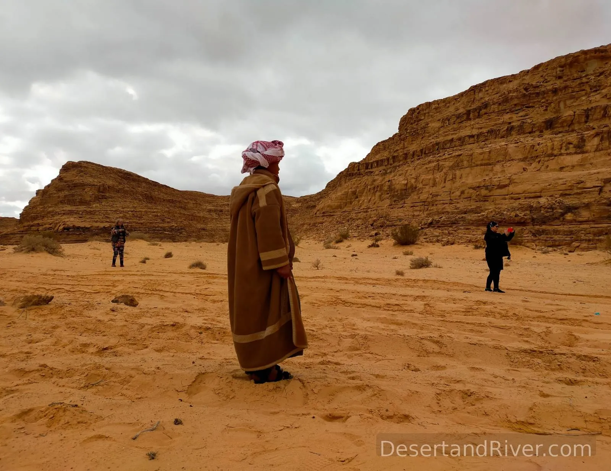
ואדי בראח
ואדי בראח הוא עמק מבודד בדרום חצי האי סיני, עם תצורות סלע בולטות, כתובות עתיקות ועקבות של פעילות אנושית היסטורית.
בוואדי בראח נמצא חג'ר אל-לע'ה, „האבן המדברת”, שההד הטבעי שלה מגביר קולות לאורך העמק. באתר השתמרו כתובות נבטיות, קופטיות, יווניות וערביות, תיעוד רב שכבות של הנוכחות האנושית הארוכה והמגוונת בסיני, שבו שקט המדבר מזמין התבוננות שקטה.
אפשר להגיע לחג'ר אל-לע'ה בהליכה קצרה משביל העמק הראשי.

ואדי ח'מילה
עמק צר בדרום סיני הידוע באמנות סלע ובכתובות עתיקות, שמשקפות נוכחות מצרית ונבטית מוקדמת ופעילות כרייה היסטורית באזור.
בוואדי ח'מילה יש לוח סלע בן 5,000 שנה שמראה דמות מצרית שולטת באדם מקומי, שקשור להפקת נחושת ולאל מין כ„אדון עפרת הנחושת”. כתובות נבטיות התווספו מאוחר יותר, ומציעות הצצה רב שכבתית להיסטוריה האנושית הארוכה של סיני. השקט בעמק מעורר תחושה של זמן שנמתח לאורך אלפי שנים.
אפשר להגיע ברכב 4x4 ואז הליכה קצרה

רמת אום עראק
רמת אום עראק היא רמת אבן חול בדרום סיני, עם מחסה סלע שתועד לאחרונה ונושא אמנות אנושית וכתובות רבות שכבות, שמתעדות אלפי שנים של מגורים.
מחסה אבן החול הטבעי שעל הרמה נמצא כ-5 ק"מ צפון-מזרחית למתחם הכרייה והמקדש העתיק בסרביט אל-חאדם, אורכו יותר מ-100 מטר, ויש בו ציורים וחריטות מסוף התקופה הפרהיסטורית ועד תקופות היסטוריות. על המשטחים נראות טכניקות ודימויים שונים, כמו בעלי חיים, סצנות ציד, רוכבים וכתובות, שמעוררים את הנוכחות המתמשכת של האנשים שחיו ועברו בנוף הקשה הזה.
אורך המחסה כ-100 מטר, עם שכבות של אמנות סלע מכ-10,000 לפנה"ס ועד התקופה המוסלמית הקדומה.

ואדי חריג'
ואדי חריג' הוא עמק פנימי בדרום סיני, הידוע בשרידי כריית נחושת ועיבוד מתכות עתיקים, ובכתובות שכוללות את שמו של המלך סחורע מהשושלת החמישית (כ-2428 לפנה"ס).
העמק נמצא כ-30 דקות נסיעה מאזור סרביט אל-חאדם, והוא חלק ממערך רחב של נופי כרייה פרהיסטוריים ומתקופת הברונזה בדרום סיני, שבו כורים ושאריות התכה מעידים על פעילות מתכות מוקדמת. בין כתובות הסלע יש קרטוש עם שמו של המלך סחורע, שמחבר את נוף המדבר הקשה לשושלת החמישית של מצרים; השקט בעמק מעביר את המאמץ האנושי המתמשך שטבוע באבנים.
כ-30 דקות מסרביט אל-חאדם, באזור הכרייה של מרכז סיני.

ג'בל חסבאר
ג'בל חסבאר היא גבעת אבן חול קטנה ליד סרביט אל-חאדם, הידועה בכתובות מוקדמות, כולל הירוגליפים עם קרטוש של המלך מנקאורע (השושלת הרביעית, כ-2510 לפנה"ס).
הכתובות בג'בל חסבאר משלבות סימנים סמליים עם טקסט הירוגליפי, ומקשרות את האתר למשלחות פרעוניות בסיני. בין הצוקים בצבע אוקר, החריטות מעוררות תחושה של היסטוריה עמוקה ושל ההתמדה השקטה של נוכחות אנושית לאורך אלפי שנים.
התגלה ב-2012; אפשר להגיע ברכב 4x4 וטיפוס קצר.

ואדי עומריה
ואדי עומריה הוא עמק מדבר בדרום סיני, הידוע בכתובות עתיקות שהתגלו לאחרונה ומתארות את חורוס של נערמר, המלך הראשון של השושלת הראשונה במצרים.
הכתובות, שנחשפו בידי טאלה ולסני ב-2012, מציגות איקונוגרפיה פרעונית מוקדמת שנשמרה רק לעיתים נדירות בנוף הצחיח של סיני. המרחב השקט של העמק והחולות הנודדים מעבירים תחושה עדינה של זמן עמוק, שבה הנוכחות האנושית מרגישה גם חולפת וגם מונומנטלית מול המדבר המתמשך.
בדרום סיני; אפשר להגיע בדרך שטח ברכב 4x4

ואדי חומור
ואדי חומור הוא עמק מרוחק בדרום סיני ששומר כתובות סלע לאורך דרך המסחר הנבטית, שמתארות סצנות היסטוריות ממלחמה ועד חיי הבדואים.
באתר יש סלע בולט שחרוטים עליו תיאורים מפורטים של קרב ושל חתונה בדואית עתיקה, הצצה נדירה להיסטוריה החברתית והצבאית של האזור. כשעומדים ליד החריטות האלה מרגישים את שקט המדבר ואת משקלן של מאות שנים שנשמרו באבן.
על דרך המסחר הנבטית, נגיש ברכב 4x4

ואדי כיד
ואדי כיד הוא עמק מדבר טבעי בדרום חצי האי סיני, שחוצה שטח מטמורפי מחוספס בנוף הצחיח ליד דהב והרמות שמסביב.
הוואדי הזה הוא חלק מהרשת הרחבה של ערוצי נחל יבשים ועונתיים שמעצבים את הטופוגרפיה של סיני, עם קירות סלע תלולים, מישורי סחף ומעיינות פה ושם שאפשרו מגורי בדואים וכתמים קטנים של צמחיית מדבר. מבחינה גיאולוגית הוא חוצה סלעים פרה-קמבריים עתיקים של המגן הערבי-נובי, ובקטעים השקטים שלו שורר שקט מוחשי, כשהאור והצל נעים על הגרניט והגנייס ומעוררים את חלוף הזמן האיטי באזור הדליל הזה.
אפשר להגיע ברכב 4x4 והליכה קצרה

יער העמודים
יער העמודים הוא תצורה גיאולוגית מרוחקת של עמודי סלע צינוריים זקופים טבעיים על המישור החולי מתחת לרמת א-תיה בדרום סיני.
האתר נמצא ליד ג'בל פוגה, ומגיעים אליו בדרכי שטח פנימה מסרביט אל-חאדם. הוא מורכב מקבוצות עמודים עשירים בתחמוצת ברזל, שצורתם משקפת תהליך נדיר של שקיעת מינרלים באבן חול מדברית. התצורות האלה מנוגדות בחדות למישורים הרחבים שעוצבו בידי הרוח סביבן, ומעניקות תחושה שקטה של זמן גיאולוגי, שבה השקט וקנה המידה מורגשים בצללים הארוכים על קרקע המדבר.
נגיש רק ברכב 4×4
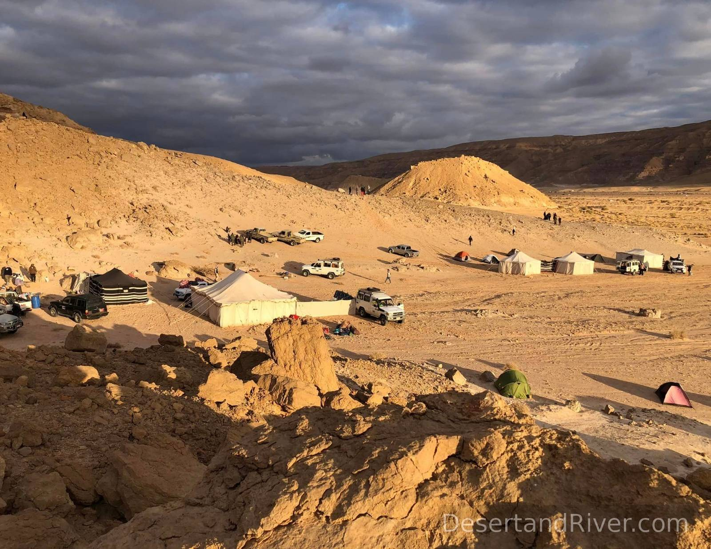
ואדי זלאגה
ואדי זלאגה הוא עמק מדבר רחב בדרום סיני, הידוע במרוצי הגמלים הבדואיים המסורתיים שמשמרים את המורשת התרבותית של השבטים.
ואדי זלאגה נמתח על פני נוף שקט ופתוח, שבו שבטי התראבין והמזיינה נפגשים מדי שנה למרוצי סבולת של 28–30 ק"מ. המרחב הצחיח של העמק מעביר גם את הקשיחות וגם את השלווה של מדבר סיני, ותחושה של המשכיות נצחית בקצב החיים המקומי.
נגיש ברכב 4x4

ואדי ח'ראבה
ואדי ח'ראבה הוא עמק יבש בחצי האי סיני, חלק מהרשת המורכבת של ערוצי נחל יבשים שמובילים מים לסירוגין בגשמים הנדירים ומעצבים את נוף המדבר המחוספס.
ואדי ח'ראבה הוא דוגמה לערוצים התלולים והאבניים האופייניים לחצי האי הצחיח, שנחצבו במשך אלפי שנים בשיטפונות פתע ובסחיפת רוח. קווי המתאר והמשקעים שלו מעידים בשקט על זמן גיאולוגי עמוק ועל ניגודי אקלים, ומעוררים תחושה של כוחות עתיקים שפועלים בדממה.
נגיש רק ברכבי 4×4; השטח מחוספס ומאתגר מאוד.
איך אנחנו בוחרים מה מתאים יחד
אנחנו לא „אוספים” מקומות. אנחנו מתכננים מסלולים שמתחשבים במרחק, בחום, בשטח, באישורים ובמוכנות של האורחים. לא פעם המסעות הכי בלתי נשכחים כוללים פחות עצירות ויותר זמן.
הצעד הבא
בחרו 5–10 מקומות שבאמת מעניינים אתכם. אחר כך קבעו שיחה ונציע מסלול אחראי.
קבעו שיחה של 30 דקות קראו איך עובדת התאמה אישית